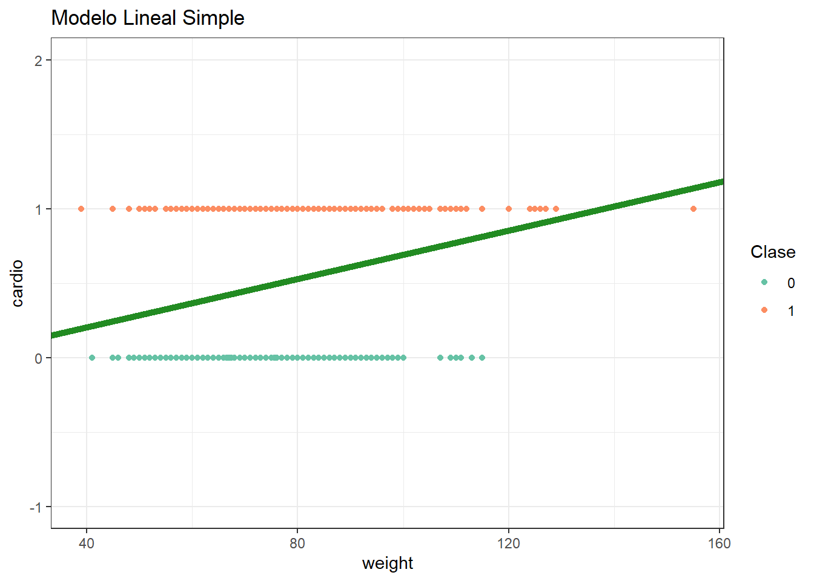

Código
# Cargamos las librerías que vamos a utilizar
library(tidyverse)
library(tidymodels)
library(modelr)
library(GGally)
library(pROC)
library(cowplot)
library(OneR)
library(rlang)
library(caret)# Cargamos las librerías que vamos a utilizar
library(tidyverse)
library(tidymodels)
library(modelr)
library(GGally)
library(pROC)
library(cowplot)
library(OneR)
library(rlang)
library(caret)Vamos a trabajar con una base de datos extraída de Kaggle. Es una base de datos que consiste de 69301 registros de pacientes a los que se les registró 12 caracteristicas asociadas a una enfermedad cardiovascular.
El objetivo de esta clase es utilizar diferentes modelos de regresión logística para predecir la presencia o ausencia de enfermedad cardiovascular (ECV) utilizando los resultados del examen del paciente.
Descripción de los datos
df <- read.csv("cardio_train.csv", sep = ";")
colSums(is.na(df))# chequeamos si hay datos faltantes id age gender height weight ap_hi
0 0 0 0 0 0
ap_lo cholesterol gluc smoke alco active
0 0 0 0 0 0
cardio
0 glimpse(df)Rows: 70,000
Columns: 13
$ id <int> 0, 1, 2, 3, 4, 8, 9, 12, 13, 14, 15, 16, 18, 21, 23, 24, 2…
$ age <int> 18393, 20228, 18857, 17623, 17474, 21914, 22113, 22584, 17…
$ gender <int> 2, 1, 1, 2, 1, 1, 1, 2, 1, 1, 1, 2, 2, 1, 2, 2, 1, 1, 1, 2…
$ height <int> 168, 156, 165, 169, 156, 151, 157, 178, 158, 164, 169, 173…
$ weight <dbl> 62, 85, 64, 82, 56, 67, 93, 95, 71, 68, 80, 60, 60, 78, 95…
$ ap_hi <int> 110, 140, 130, 150, 100, 120, 130, 130, 110, 110, 120, 120…
$ ap_lo <int> 80, 90, 70, 100, 60, 80, 80, 90, 70, 60, 80, 80, 80, 70, 9…
$ cholesterol <int> 1, 3, 3, 1, 1, 2, 3, 3, 1, 1, 1, 1, 1, 1, 1, 1, 1, 1, 1, 1…
$ gluc <int> 1, 1, 1, 1, 1, 2, 1, 3, 1, 1, 1, 1, 1, 1, 1, 1, 1, 3, 1, 1…
$ smoke <int> 0, 0, 0, 0, 0, 0, 0, 0, 0, 0, 0, 0, 0, 0, 1, 0, 0, 0, 0, 1…
$ alco <int> 0, 0, 0, 0, 0, 0, 0, 0, 0, 0, 0, 0, 0, 0, 1, 0, 0, 0, 0, 0…
$ active <int> 1, 1, 0, 1, 0, 0, 1, 1, 1, 0, 1, 1, 0, 1, 1, 0, 0, 1, 0, 1…
$ cardio <int> 0, 1, 1, 1, 0, 0, 0, 1, 0, 0, 0, 0, 0, 0, 0, 1, 0, 0, 0, 0…Se genera una muestra de tamaño 1000 con la que se realizaran los análisis y se analiza si hay desbalance en la variable respuesta.
df <- df %>%
sample_n(1000)
df %>%
group_by(cardio) %>%
summarise(cnt = n()) %>%
mutate(freq = round(cnt / sum(cnt), 2))# A tibble: 2 × 3
cardio cnt freq
<int> <int> <dbl>
1 0 495 0.5
2 1 505 0.5set.seed(2025)
df_split <- initial_split(df,
prop = 0.8)
train<- df_split %>%
training()
test <- df_split %>%
testing()
# Número de datos en train
paste0("Total del dataset de entrenamiento: ", nrow(train))[1] "Total del dataset de entrenamiento: 800"Analizamos como quedo el balance de clases para cardio en cada dataset.
# calculamos la distribución de clase en cada dataset
train_ <- train %>%
group_by(cardio) %>%
summarise(numero_casos=n()) %>%
mutate(prop = round(prop.table(numero_casos)*100,2))
test_ <- test %>%
group_by(cardio) %>%
summarise(numero_casos=n()) %>%
mutate(prop = round(prop.table(numero_casos)*100,2))
# armamos tabla conjunta para graficar
distrib = cbind(rbind(train_, test_), dataset = c("train", "train", "test", "test"))
# graficamos las distribuciones
ggplot(distrib, aes(x = cardio, y = prop, fill = factor(cardio), label = prop)) +
geom_bar(stat="identity", position = "dodge") + facet_wrap(~ dataset) +
theme(axis.text.x = element_text(angle = 90, hjust = 1)) +
labs(x = "", y = "Proporción en %", title = "Proporción de cardio por dataset") +
guides(fill=guide_legend(title="cardio"))+
theme_bw() +
scale_fill_brewer(palette="Set2")
glimpse(train)Rows: 800
Columns: 13
$ id <int> 6715, 88133, 37378, 54574, 36301, 14598, 38135, 88984, 510…
$ age <int> 20320, 21292, 19569, 20639, 15319, 15965, 20375, 18278, 18…
$ gender <int> 1, 1, 1, 1, 1, 1, 2, 1, 2, 1, 1, 2, 2, 2, 1, 1, 2, 1, 1, 2…
$ height <int> 156, 160, 171, 158, 165, 160, 159, 165, 170, 160, 154, 178…
$ weight <dbl> 60, 79, 76, 60, 61, 63, 69, 70, 65, 65, 52, 82, 110, 58, 7…
$ ap_hi <int> 110, 140, 100, 120, 100, 11, 120, 130, 120, 110, 100, 140,…
$ ap_lo <int> 70, 90, 70, 80, 60, 60, 60, 80, 80, 70, 60, 90, 90, 70, 10…
$ cholesterol <int> 2, 1, 1, 1, 1, 1, 1, 1, 1, 1, 3, 1, 2, 1, 2, 2, 1, 1, 1, 3…
$ gluc <int> 2, 1, 1, 1, 1, 3, 1, 1, 1, 1, 1, 1, 2, 1, 2, 2, 2, 1, 1, 3…
$ smoke <int> 0, 0, 0, 0, 0, 0, 0, 0, 0, 0, 0, 0, 0, 1, 0, 0, 0, 0, 0, 0…
$ alco <int> 0, 0, 0, 0, 0, 0, 0, 0, 0, 0, 0, 0, 0, 0, 0, 0, 0, 0, 0, 0…
$ active <int> 1, 1, 0, 1, 1, 1, 1, 1, 1, 1, 1, 1, 1, 1, 1, 1, 0, 0, 1, 1…
$ cardio <int> 0, 1, 0, 1, 0, 0, 0, 0, 0, 1, 1, 1, 1, 1, 1, 1, 0, 1, 1, 1…Seleccioamoslas variables con las que vamos a trabajar y les asignamos el tipo de dato correspondiente.
cols <- c("age",
"height",
"weight",
"gender",
"cholesterol",
"gluc",
"cardio")
train$gender <- as.factor(train$gender)
train$cholesterol <- as.factor(train$cholesterol)
train$gluc <- as.factor(train$gluc)# graficamos con ggpairs coloreando por variable a predecir
g <- train %>%
mutate(cardio = factor(cardio)) %>%
select(all_of(cols)) %>%
ggpairs(title = "Correlograma de variables",
mapping = aes(colour= cardio),
progress = FALSE,
lower=list(combo=wrap("facethist", binwidth=0.8))) +
theme(axis.text.x = element_text(angle = 90, hjust = 1)) +
theme_bw() +
scale_fill_brewer(palette="Set2") +
scale_color_brewer(palette="Set2")
g
En este caso estamos modelando la probabilidad de la siguiente manera:
\(P(X)= \beta_0 + \sum\limits_{j=1}^p \beta_j X_j\)
Veamos que tan bueno es el modelo lineal para esto, usando la edad como predictor.
mrl <- train %>%
lm(formula = cardio ~ weight)
tdy = mrl %>% tidy()
tdy# A tibble: 2 × 5
term estimate std.error statistic p.value
<chr> <dbl> <dbl> <dbl> <dbl>
1 (Intercept) 0.0449 0.0926 0.484 0.628
2 weight 0.00636 0.00124 5.13 0.000000372mrl %>% glance()# A tibble: 1 × 12
r.squared adj.r.squared sigma statistic p.value df logLik AIC BIC
<dbl> <dbl> <dbl> <dbl> <dbl> <dbl> <dbl> <dbl> <dbl>
1 0.0319 0.0307 0.492 26.3 0.000000372 1 -567. 1141. 1155.
# ℹ 3 more variables: deviance <dbl>, df.residual <int>, nobs <int>Los estimadores son significativos y el test de significatividad global del modelo también es significativo.
Veamos un gráfico de nuestro modelo.
Warning: Using `size` aesthetic for lines was deprecated in ggplot2 3.4.0.
ℹ Please use `linewidth` instead.
Parece tener bastantes problemas para estimar la probabilidad de supervivencia de los individuo: no existe un punto de corte claro, la predicción podría ser mayor a 1 o menor a cero llegado el caso.
Odds
Cociente entre la probabilidad de éxito de un evento y la probabilidad de que no ocurra.
\(Odds = \frac{P(x)}{1-P(x)}\)
Ej. si Odds es 3 indica que por cada 4 repeticiones del evento se espera que ocurran 3 y que una no ocurra.
Odds < 1 : es mas probable que no ocurra a que si
Odds = 1 : equiprobabilidad
Odds > 1: es mas probable que el evento ocurra a que no.
En nuestro caso:
\(Odds = \frac{391/800}{409/800}= 0.9558 \approx \frac{191}{200}\)
Por cada 191 pacientes con ECV, 200 no la tienen.
\(Logit = \log {\frac{P(x)}{1-P(x)}}= \log Odds\)
1- Escala del predictor lineal 2- Odds 3- Escala de la VR

Para evitar estos problemas, usamos la función logística.
\(P(Y=1|X)= \frac{e^{\beta_0 + \sum\limits_{j=1}^p \beta_j X_j}}{1+e^{\beta_0 + \sum\limits_{j=1}^p \beta_j X_j}}\)
El lado derecho se llama expit
Esta función acota el resultado entre 0 y 1, lo cual es mucho más adecuado para modelar una probabilidad.
Luego de hacer algunas operaciones, podemos llegar a la expresión:
\(\log {\frac{P(x)}{1-P(x)}}= \beta_0 + \sum\limits_{j=1}^p \beta_j X_j\)
El lado izquierdo es el logaritmo de los odds y se llama logit.
La funcíón glm() nos permite crear un modelo lineal generalizado (Generalized Linear Model). Al igual que la función lm() toma como argumentos una formula y los datos pero también se debe especificar el argumento family: indicamos la distribución del error y la función link que vamos a utilizar en el modelo.
Algunas familias son:
Binomial: link=logit
Poisson: link=log
Gaussiana: link=identidad
Como estamos trabajando con un fenómeno que suponemos tiene una distribución binomial, así lo especificamos en el parámetro family.
Realizamos un modelo de regresión logística para predecir la supervivencia en función de wight, cholesterol y gender.
# modelo de regresión logística
glm1 <- glm(data = train, cardio ~ weight + cholesterol + gender, family = 'binomial')
# veo los resultados
tidy(glm1)# A tibble: 5 × 5
term estimate std.error statistic p.value
<chr> <dbl> <dbl> <dbl> <dbl>
1 (Intercept) -1.93 0.412 -4.69 0.00000279
2 weight 0.0244 0.00566 4.32 0.0000159
3 cholesterol2 0.667 0.204 3.27 0.00109
4 cholesterol3 1.05 0.238 4.43 0.00000957
5 gender2 -0.133 0.157 -0.846 0.397 glance(glm1)# A tibble: 1 × 8
null.deviance df.null logLik AIC BIC deviance df.residual nobs
<dbl> <int> <dbl> <dbl> <dbl> <dbl> <int> <int>
1 1109. 799 -527. 1064. 1087. 1054. 795 800